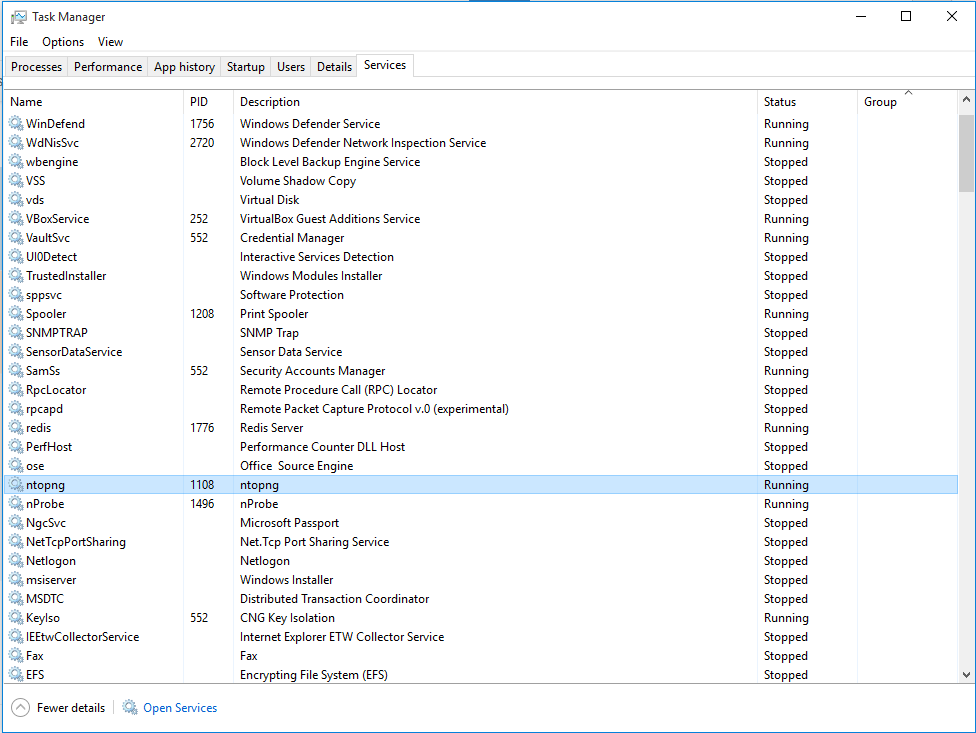

Работает на Windows
на Windows ntopng работает как служба. Установщик ntopng регистрирует службу и автоматически запускается, как показано ниже.

Менеджер по обслуживанию Windows
Запустить ntopng из cmd.exe можно только в целях отладки или для управления настройками службы. В этом случае вы можете запустить cmd.exe (т. е. Windows Командная строка) и перейти в каталог установки ntopng (т. е. C:\Program Files\ntopng). Команды подаются после /c это означает консоль. Например, для отображения встроенной справки достаточно запустить
ntopng /c -h
Предупреждение
ntopng требует Redis служба должна быть запущена, иначе она не запустится. Убедитесь, что эта служба запущена и автоматически запускается при загрузке. Проверьте его статус в приложении «Службы».
Получение списка контролируемых интерфейсов
Поскольку сетевые интерфейсы на Windows могут иметь длинные имена, с интерфейсом связан числовой индекс, чтобы упростить настройку ntopng. Связь между именем интерфейса и индексом отображается во встроенной справке.
c:\Program Files\ntopng>ntopng /c -h
[...]
Available interfaces (-i <interface index>):
1. Intel(R) PRO/1000 MT Desktop Adapter
{8EDDEFE3-D6DB-4F9B-9EDF-FBC0BFF67F3C}
[...]
В приведенном выше примере сетевой адаптер Intel(R) PRO/1000 MT Desktop связан с индексом 1. Чтобы выбрать этот адаптер, необходимо запустить ntopng с помощью -i 1 вариант.
Управление настройками сервиса ntopng Windows
Службы Windows запускаются и останавливаются с помощью прикладной части «Службы» инструментов администрирования Windows. Когда ntopng используется в качестве службы, параметры командной строки необходимо указать при регистрации службы, и их можно изменить только путем удаления и повторного добавления службы. Установщик ntopng регистрирует ntopng как службу с параметрами по умолчанию.
Чтобы запустить ntopng с пользовательскими параметрами, предлагается использовать nssm; его можно скачать с здесь.
Примечание
Внутри загруженной папки есть две папки: одна для 32-битных систем и одна для 64-битных систем.
Извлеките все и запустите программу nssm.exe из CMD:
C:\nssm\nssm.exe install ntopng
После запуска этой команды откроется GUI, где можно настроить процесс с указанием пути к исполняемому файлу запускаемого процесса (в данном случае ntopng) и аргументов, которые будут использоваться при запуске.
Предупреждение
В windows файл конфигурации нельзя использовать в качестве параметра, как в Linux, поэтому все параметры необходимо указать в разделе «Аргументы».
Предупреждение
В windows перед аргументами должна стоять /c, например /c -i 1 -i tcp://127.0.0.1:5556 -m 192.168.2.0/24.
После корректной настройки процесса сервис необходимо запустить (либо с помощью sc start ntopng команду из CMD или с помощью Сервисов Windows).
Поиск неисправностей
Для запуска ntopng требуется активация службы Redis. Вы можете проверить статус Redis в приложении «Службы».
На некоторых компьютерах Windows, особенно с адаптерами Wi-Fi, ntopng может не обнаруживать эти адаптеры. В этом случае мы предлагаем вам удалить драйверы Win10Pcap, установленные с помощью ntopng, и перейти к драйверам ncap Windows, которые можно установить из драйверы npcap Windows.